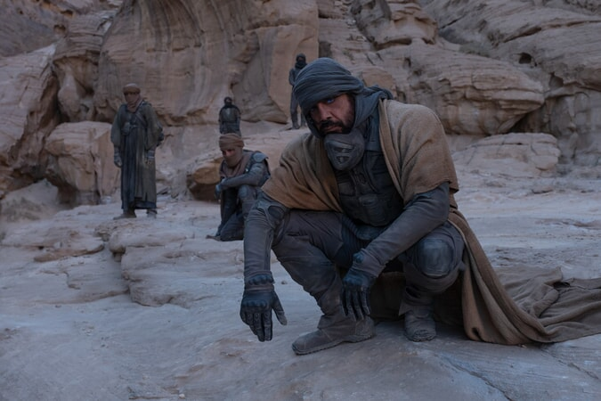
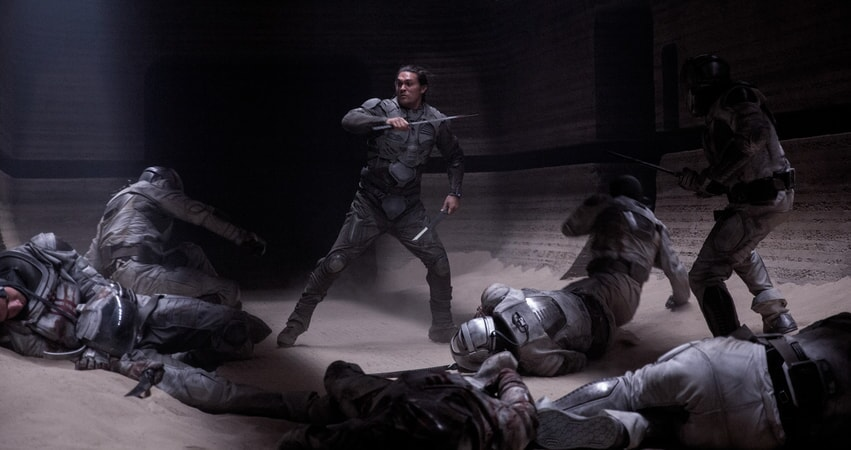

Dans votre cinéma !
A propos du film
Dans un futur lointain de l'humanité, le duc Leto Atréides reçoit de l'Empereur le fief de la très
profitable et très dangereuse planète désertique Arrakis. Également connue sous le nom de « Dune »,
cette planète est la seule source de la substance la plus précieuse de l'Imperium, « l’Épice », une
drogue qui prolonge la vie humaine, immunise contre les poisons et procure des facultés mentales
surhumaines. L’Épice rend notamment possible la navigation interstellaire, base de toute l'économie
impériale.
Bien que Leto sache que cette opportunité est un piège complexe tendu par ses ennemis, il emmène
avec
lui sa concubine Bene Gesserit, dame Jessica, son jeune fils et héritier Paul et ses soldats les
plus
fiables sur Arrakis. Leto prend le contrôle de l'extraction d’Épice, rendue périlleuse par la
présence
de vers de sable géants qui attaquent toute source de vibrations. Mais, après une trahison amère,
Paul
et Jessica arrivent jusqu’aux Fremen, le peuple autochtone d'Arrakis qui vit dans le désert profond
de
la planète. Les Fremen sont dans l'attente du Mahdi, le messie qui suscitera le soulèvement et les
libérera de l'oppression de l'Imperium.

Personnages


Chani
Paul Atréides
Docteur Wellington
Duncan Idaho
Images du Film

